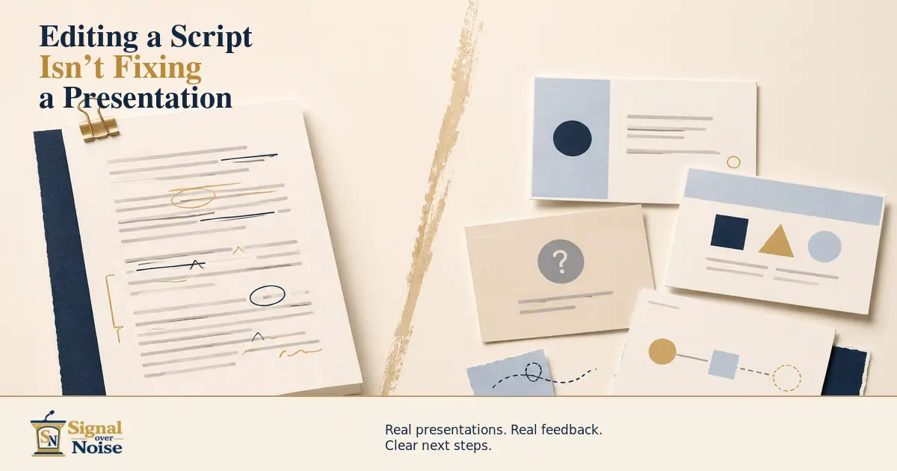
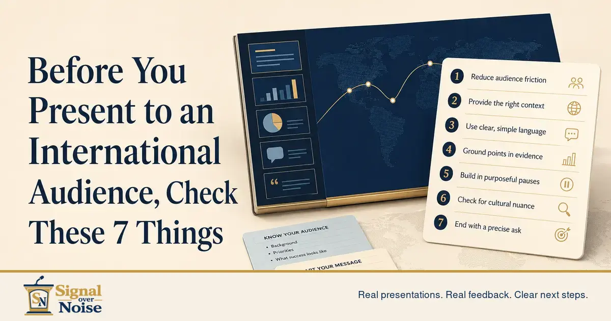
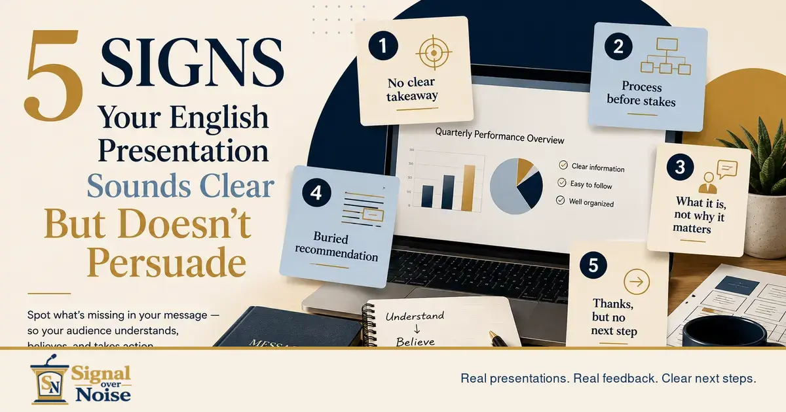
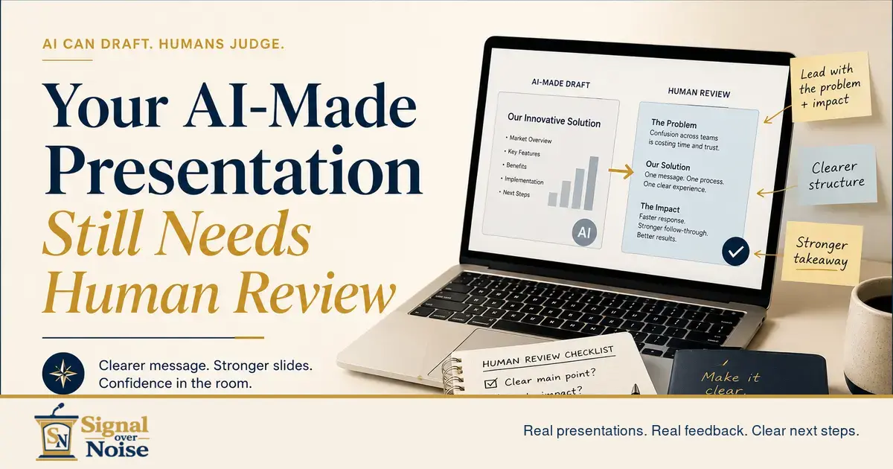
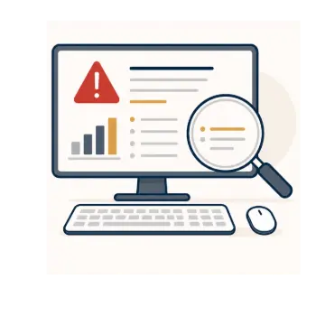
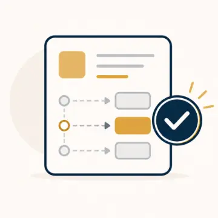
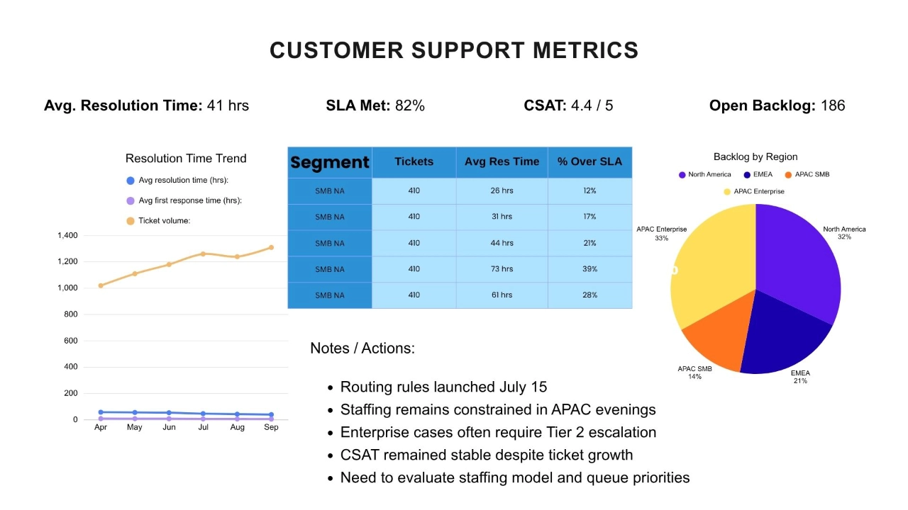
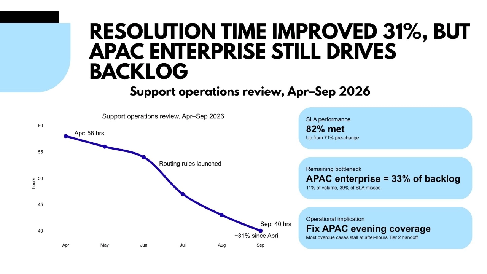
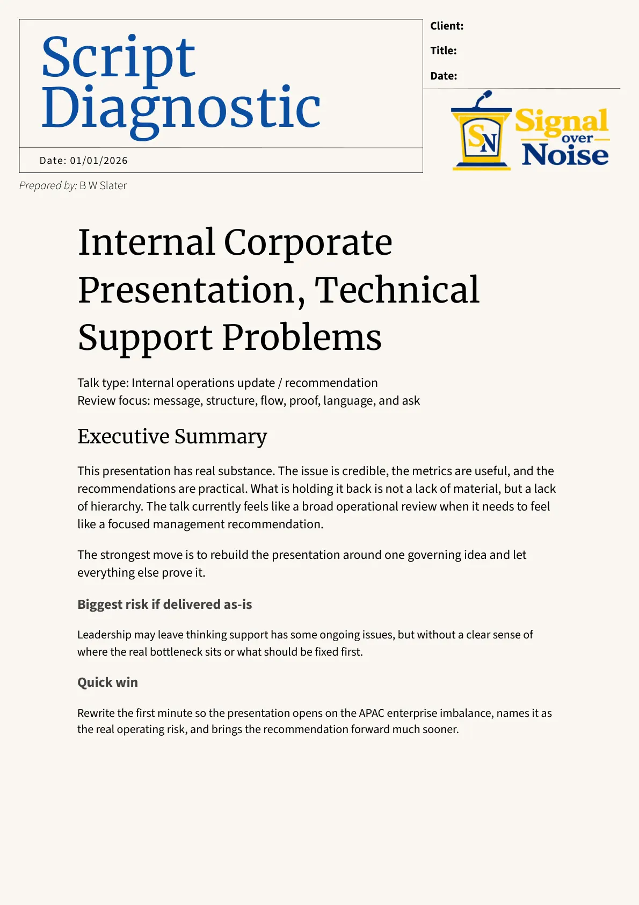

Script / Message Structure
Editing a Script Isn’t Fixing a Presentation
Editing a script improves the wording. It does not fix a presentation whose message, structure, slides, or next step are still unclear.
Read the articleReal presentations. Real feedback. Clear next steps.
If you are presenting in English or across languages, Signal over Noise helps you find the real problem first: the message, the deck, the delivery, or the pressure around the room.
Send the presentation. Get the clearest next step.
The free diagnostic gives 3-5 specific fixes and a recommended next step. It is not a full rewrite, full deck redesign, or rehearsal plan.
The Insight Desk
Clear, useful guidance for people presenting in English, across languages, or in rooms where the stakes are higher than the slide count suggests.
Explore how to improve the message, deck, script, and delivery, then decide what actually needs fixing.

Script / Message Structure
Editing a script improves the wording. It does not fix a presentation whose message, structure, slides, or next step are still unclear.
Read the article
International Audience Readiness
Strong English and clean slides are not enough for an international audience. Use these seven checks to reduce friction, clarify your message, and make the next step obvious.
Read the article
English Presentation Fixes
Your English presentation may sound clear but still fail to persuade. Learn five signs your talk explains well but does not move the audience toward a decision.
Read the article
AI + Human Expert Review
AI can help draft your presentation. It cannot reliably judge whether your message, structure, slides, and delivery will work for a real international audience.
Read the articleFounder / Coach
Ben leads the review, spots where the audience starts working too hard, and focuses the next fix on what will actually help the presentation land.
Who This Is For
Founders, academics, operators, and cross-border teams use Signal over Noise when the presentation matters and the current version is not yet doing enough work.
How It Works
01 / Send it
Share the current deck, script, or practice recording plus the presentation context.

02 / Review
The review highlights what is blocking clarity, credibility, or delivery before it turns into a bigger rewrite.

03 / Decide
Continue with focused paid support, rehearsal help, team training, or a lighter next step if that is the honest answer.
Proof in the decision flow
Look at the markup, the rewritten slide, and the diagnostic sample before you decide whether the process feels useful.
Before / After Slide Comparison


Clearer hierarchy, better pacing, and a more obvious takeaway.
Sample Diagnostic Markup

Services
If you are not sure what kind of help fits the presentation, start with the free diagnostic. If the need is already obvious, the other routes are still available.
Default First Step
Best when the problem is still unclear. Send current material and get specific fixes plus a recommended next step.
Request a Free DiagnosticHigh-Intent Route
For people who already know they need direct help on a real presentation, pitch, lecture, meeting, or rehearsal.
Request Paid SupportTeam Route
For groups that need clearer messages, better slides, and stronger rehearsal habits across the team.
Ask About a WorkshopPartner Route
For learners who prefer scheduled 1:1 practice through the Mallang partner program.
View Mallang Class DetailsAlready sure the presentation needs direct support? You can skip the diagnostic and request paid support here.
Next Step
Submit the request, share the context, and get the clearest recommendation before you spend more time pushing on the wrong part of the presentation.
Real presentations. Real feedback. Clear next steps.
The free diagnostic gives 3-5 specific fixes and a recommended next step. It is not a full rewrite, full deck redesign, or rehearsal plan.
Already know you need direct help? Request paid support.